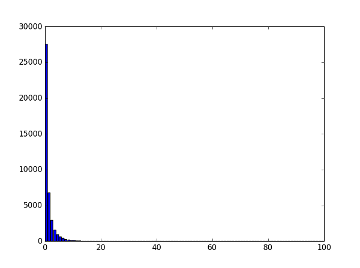
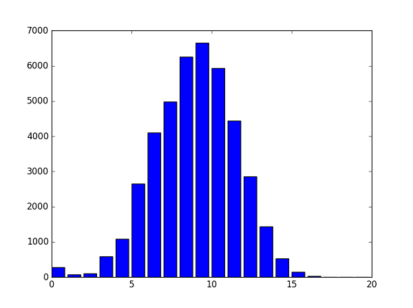

When monitoring the health of a codebase one smell is file size. Excessive file size may indicate, for example, breach of the Single Responsibility principle of SOLID. So it is tempting to track the maximum file size over the hierarchy of the project.
Unfortunately this strategy necessarily finds the outliers. The reason a file may be bloated is that it contains boilerplate in which case the tracking of this information is of no use to the developer. It is possible that small file size is also of interest. For example books for learning C in the early 90's showed the wonders that could be achieved in only a single line of clever code. Unfortunately all the synonyms for clever that should rather be used are too rude to repeat here.
So how to track meaningful statistics for the number of lines of code in a file (or a class, etc.)? By using Statistics! Specifically by reporting a confidence interval, i.e. the minimum and maximum values that the variable is expected to lie between with a particular probability. For example a weather forecaster may state that there is a 90% chance that there will be between 2cm and 10cm of rain tomorrow.
To calculate the confidence interval the area under a probability distribution is integrated. It is known that the number of lines of code (LOC) in a file is a non-negative integer and it is expected that the value of LOC may be shared by some files and that between different values of LOC that are found in the project there will be intermediate values that no file has. Thus it can be deduced that a continuous probability distribution over the semi-infinite real line is required.
Things are much easier to assess be examining some data, for example the files from an ARM build of the Linux kernel 4.6. This comprises of 19912871 lines (just a basic count no filtering of blank lines / comments) in 42186 files, which gives a mean of 472 lines per file. The largest file contains 33510 lines. Chopping the interval from 0 to 34000 into 100 bins and counting the number of files that are sorted into each bin (the first bin contains a count of all files with between 1 and 340 lines). This constructs the following histogram,

It's going to be hard to fit a curve given that it is so steep so time to think again. Note that it looks like an exponential decay, also normally the number of lines is rounded to the nearest power of 10. So construct a histogram from a base 10 logarithm of the number of lines to produce the following,

By taking the logarithm the semi-infinite real line is mapped to the infinite real line, [0, +inf) => (-inf, +inf), and thus to a different class of probability distributions. The histogram looks very much like a normal (a.k.a. Gauss or bell curve) distribution. Denoting the original random variable as X and the new one as Y = log(X) then define the mean as Y_bar = sum(Y) / sum(1) and the variance as s^2 = sum( (Y -Y_bar)^2 ) / (sum(1) - 1) where the sum is taken over the files. The 90% confidence interval, for a normal distribution, can then be calculated as Y_bar +/- 1.645 * s, then take the exponential to return back to X = 10^Y.
The particular numbers for the example data are:
Y_bar = 2.260263Y_bar +/- 1.645 * s = [1.214297, 3.306228]10^Y_bar = 182[10^1.214297, 10^3.306228] = [16, 2024]So the numbers suggest that the average file size is 182 lines and that it is expected that the files to vary between 16 and 2024 lines. Doing an actual comparison shows that 91% of the files are within the interval.
The method has been implemented in the HTML reporting of my Software Architecture tool DeepEnds (source code). This allows running on some sample projects to evaluate usefulness. Looking at one level in a Visual C++ project hierarchy (section refers to the filter)
| SLOC | Section | ||||
|---|---|---|---|---|---|
| Sum | Lower | Expected | Upper | Max | |
| 5060 | 6 | 28 | 130 | 469 | FEA |
| 3493 | 7 | 28 | 105 | 469 | FEA\Core |
| 472 | 9 | 33 | 114 | 93 | FEA\Equations |
| 522 | 6 | 36 | 195 | 189 | FEA\FileIO |
| 48 | 17 | 23 | 31 | 27 | FEA\LinearSystem |
| 237 | 12 | 47 | 178 | 101 | FEA\Mesh |
| 281 | 12 | 99 | 774 | 240 | FEA\Solver |
At the top level the numbers look fine, however it is seen that the ratio of upper to max for FEA\Solver is greater than 3. Examining that section it is seen to comprise of only two leaf nodes
| Dependency | SLOC |
|---|---|
| FEA\Solver\Solver.cpp | 240 |
| FEA\Solver\Solver.h | 41 |
Thus the great difference can be seen to be due to comparing files which are not expected to be of the same magnitude.
Changing to a C# project and parsing with Roslyn (section refers to namespace)
| SLOC | Section | ||||
|---|---|---|---|---|---|
| Sum | Lower | Expected | Upper | Max | |
| 1751 | 5 | 25 | 118 | 189 | DeepEnds |
| 119 | 37 | 58 | 92 | 71 | DeepEnds.Console |
| 712 | 4 | 23 | 122 | 189 | DeepEnds.Core |
| 68 | 4 | 26 | 143 | 55 | DeepEnds.Core.Complex |
| 94 | 1 | 12 | 116 | 63 | DeepEnds.Core.Dependent |
| 71 | 6 | 19 | 64 | 44 | DeepEnds.Core.Linked |
| 112 | 3 | 26 | 181 | 59 | DeepEnds.Cpp |
| 284 | 5 | 23 | 104 | 132 | DeepEnds.CSharp |
| 253 | 6 | 28 | 126 | 132 | DeepEnds.CSharp.ParseTree |
| 61 | 61 | 61 | 61 | 61 | DeepEnds.Decompile |
| 65 | 65 | 65 | 65 | 65 | DeepEnds.DGML |
| 106 | 3 | 18 | 103 | 60 | DeepEnds.GUI |
| 292 | 5 | 23 | 109 | 136 | DeepEnds.VBasic |
| 261 | 6 | 29 | 133 | 136 | DeepEnds.VBasic.ParseTree |
It can be seen that the upper / max ratio is much better behaved at the lower levels but still not great.
The log-normal probability distribution has been shown to be appropriate to modelling the distribution of the number of lines of code in a project between its comprising files / classes. The usefulness of the confidence intervals only applies at the higher level in a hierarchy.